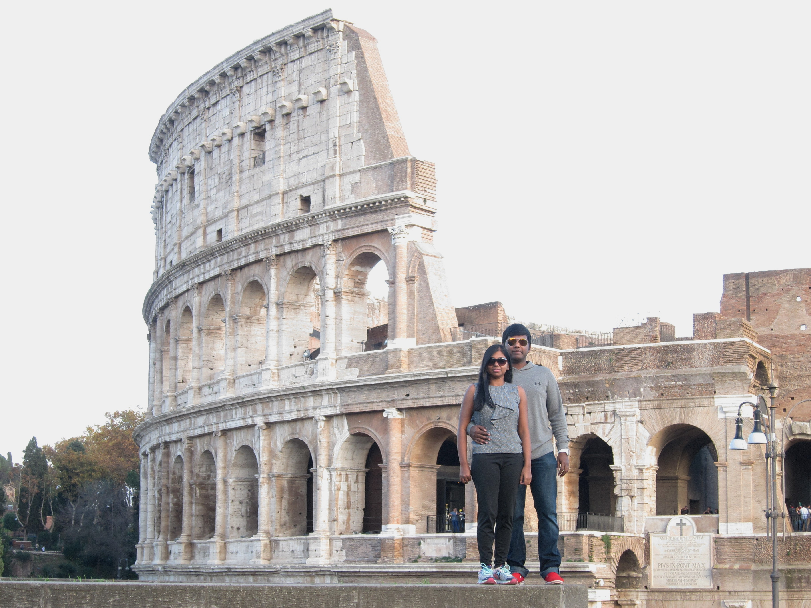
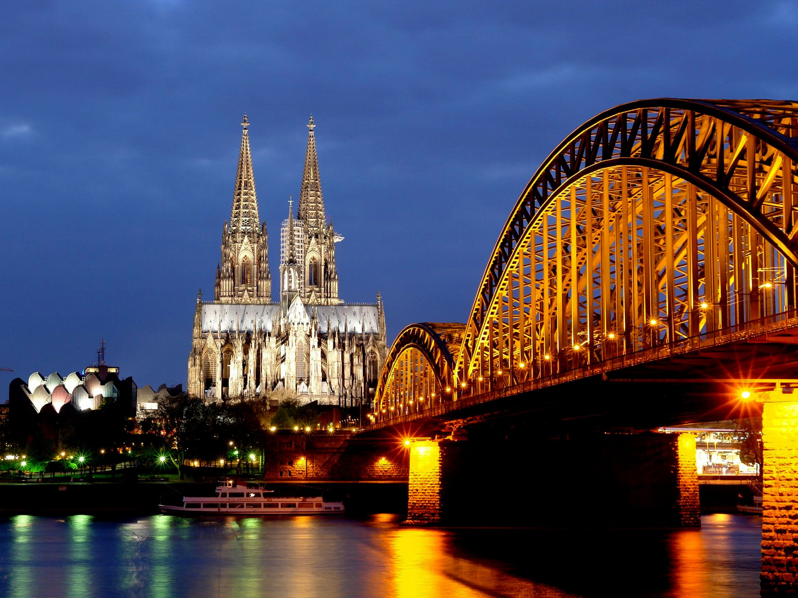

>>> A video about Colosseum <<<
My Europe Trip
Rome:
Rome, Italy’s capital, is a sprawling, cosmopolitan city with nearly 3,000 years of globally influential art, architecture and culture on display. Ancient ruins such as the Forum and the Colosseum evoke the power of the former Roman Empire. Vatican City, headquarters of the Roman Catholic Church, has St. Peter’s Basilica and the Vatican Museums, which house masterpieces such as Michelangelo’s Sistine Chapel frescoes.
Venice:
Venice, the capital of northern Italy’s Veneto region, is built on more than 100 small islands in a lagoon in the Adriatic Sea. It has no roads, just canals – including the Grand Canal thoroughfare – lined with Renaissance and Gothic palaces. The central square, Piazza San Marco, contains St. Mark’s Basilica, which is tiled with Byzantine mosaics, and the Campanile bell tower offering views of the city’s red roofs.

Germany:
Germany is a Western European country with a landscape of forests, rivers, mountain ranges and North Sea beaches. It has over 2 millennia of history. Berlin, its capital, is home to art and nightlife scenes, the Brandenburg Gate and many sites relating to WWII. Munich is known for its Oktoberfest and beer halls, including the 16th-century Hofbräuhaus. Frankfurt, with its skyscrapers, houses the European Central Bank.
